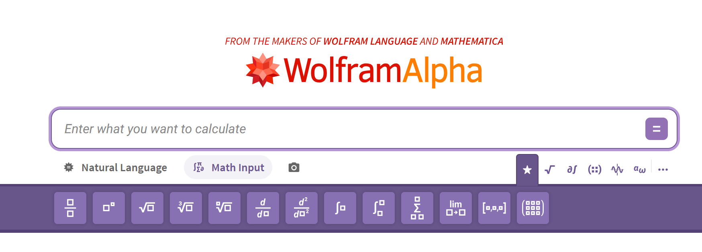
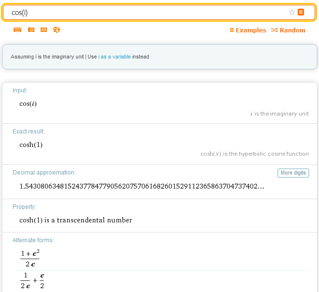
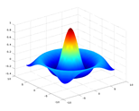

Wolfram Alpha¶

Wolfram Alpha jest serwisem obliczeniowym, który zamiast zwracać listę stron internetowych próbuje bezpośrednio obliczyć lub zestawić odpowiedź na zadane pytanie. Można wpisywać zarówno wyrażenia matematyczne, jak i krótkie pytania lub hasła, np. How far is the Moon now?, copper albo speed of light.
Jedną z najważniejszych zalet Wolfram Alpha jest połączenie obliczeń symbolicznych, numerycznych i dużej bazy danych. Dzięki temu serwis jest przydatny zarówno do szybkiego sprawdzania rachunków, jak i do eksplorowania własności funkcji, stałych, jednostek, danych fizycznych czy astronomicznych.
Wolfram Alpha powstał w 2009 roku i jest rozwijany przez firmę Wolfram Research, znaną również z systemu Mathematica oraz języka Wolfram Language. W 2012 roku powstała również wersja mobilna Wolfram Alpha na systemy Android i iOS.
Choć współczesne modele językowe (LLM, Large Language Models) i wyszukiwarki internetowe potrafią odpowiadać na pytania w języku naturalnym, Wolfram Alpha pozostaje przydatnym narzędziem do szybkich obliczeń, sprawdzania własności funkcji i danych liczbowych, a także do uzyskiwania informacji z wielu baz danych.
Dostęp do Wolfram Alpha¶
Otwórz Wolfram Alpha oraz Przykłady z fizyki
Jak wpisywać zapytania?¶
Wolfram Alpha nie wymaga formułowania pełnych zdań. Często wystarcza krótka fraza, nazwa obiektu lub samo wyrażenie matematyczne, np.:
W tym kursie zapytania do Wolfram Alpha wpisujemy w języku angielskim. Angielskie nazwy poleceń i pojęć matematycznych dają najbardziej przewidywalną interpretację zapytania i odpowiadają przykładom używanym na zajęciach.
Przykład: cos(i)¶
Po wpisaniu
Wolfram Alpha może przedstawić kilka równoważnych informacji o tym samym wyrażeniu.

W szczególności:
- interpretuje \(i\) jako jednostkę urojoną,
- podaje dokładną wartość
$$ \cos(i)=\cosh(1), $$
- podaje wartość numeryczną,
- wskazuje alternatywną postać
$$ \cos(i)=\frac{e+e^{-1}}{2}, $$
- może podać wartość numeryczną z bardzo dużą liczbą cyfr,
- informuje o dodatkowych własnościach liczby, np. że \(\cos(i)\) jest liczbą przestępną,
- może pokazać rozwinięcie w szereg:
$ \cos(i)=\cosh(1) =1+\frac{1}{2!}+\frac{1}{4!}+\frac{1}{6!}+\ldots, $
- może podać rozwinięcie w ułamek łańcuchowy i inne reprezentacje.
To dobry przykład tego, że jedno krótkie zapytanie może prowadzić równocześnie do wyniku dokładnego, przybliżenia numerycznego, szeregu, alternatywnych reprezentacji i odnośników do dalszej wiedzy.
Do czego używać Wolfram Alpha?¶
W ramach tego kursu Wolfram Alpha najlepiej traktować jako narzędzie do:
- szybkiej kontroli rachunków,
- obliczeń symbolicznych,
- obliczeń numerycznych,
- rozwiązywania równań,
- obliczania granic, pochodnych, całek i sum,
- rysowania wykresów,
- sprawdzania jednostek i stałych fizycznych,
- wyszukiwania danych liczbowych i porównywania wielkości.
Wolfram Alpha nie zastępuje jednak języka programowania. Do dłuższych obliczeń, automatyzacji, pracy na tablicach danych i pisania własnych programów w tym kursie używamy przede wszystkim GNU Octave.
Wolfram Alpha a Octave¶
Te narzędzia dobrze się uzupełniają, ale służą do nieco innych zadań:
| Wolfram Alpha | Octave |
|---|---|
| szybkie pojedyncze zapytania | skrypty i całe programy |
| bardzo wygodne obliczenia symboliczne | automatyzacja obliczeń numerycznych |
| szybkie sprawdzanie wyników | praca na dużych zbiorach danych |
| dane z wielu dziedzin i jednostki | własne algorytmy i procedury |
| działa głównie jako usługa internetowa | może działać lokalnie i bez dostępu do sieci |
Wolfram Alpha ma wersję podstawową oraz płatne plany Pro z dodatkowymi funkcjami, m.in. rozszerzonym czasem obliczeń i rozwiązaniami krok po kroku.
Quiz¶
- Czym różni się Wolfram Alpha od klasycznej wyszukiwarki internetowej?
- Czy Wolfram Alpha nadaje się wyłącznie do wykonywania obliczeń matematycznych?
- Czy zapytania muszą być pełnymi, poprawnymi gramatycznie zdaniami?
- Jakie typy obliczeń matematycznych potrafi wykonywać Wolfram Alpha?
- Jakie są ograniczenia Wolfram Alpha w porównaniu z językiem skryptowym takim jak Octave?
- Co łączy Wolfram Alpha z ekosystemem Wolfram Research, systemem Mathematica i językiem Wolfram Language?
- Czy Wolfram Alpha wymaga zawsze idealnie sformułowanego zapytania?
- Jakiego rodzaju dodatkowe możliwości oferują płatne wersje Pro?
Zadania A — dane i wiedza ogólna¶
- Podaj wartość tysięcznej cyfry w rozwinięciu dziesiętnym liczby \(\pi\).
- Podaj bieżącą odległość Księżyca od Ziemi.
- Podaj częstotliwość występowania liter alfabetu w tekście w języku polskim.
- Policz średnicę atomu krzemu w nanometrach.
- Sprawdź pogodę w dniu swoich urodzin w swoim mieście.
- Sprawdź, ile witaminy D jest w \(1\,\mathrm{km}^3\) mleka.
- Porównaj Polskę i Niemcy.
- Porównaj jabłko i pomarańczę.
- Porównaj Alberta Einsteina i Marię Skłodowską-Curie.
- Sprawdź stosunek populacji Francji i Niemiec.
- Jaki kolor odpowiada fali o długości \(480\,\mathrm{nm}\)?
- Sprawdź, ile kalorii jest w 10 M&M’s i osobno w \(0{,}5\,\mathrm{l}\) wódki.
- Sprawdź odległość między swoim miastem a Turynem.
- Sprawdź jednocześnie czas w Polsce i Chile.
- Sprawdź efekt wpisania
10 nearest stars. - Sprawdź efekt wpisania każdej z fraz:
Weimar Triangle,Sierpiński Triangle,5000 words in Polish. - Wybierz jeden z przykładów z fizyki i pokaż go pozostałym studentom.
Zadania B — matematyka¶
1. Uprość (simplify) iloraz
2. Narysuj wykres funkcji
3. Narysuj wykres tej samej funkcji obejmujący przedział \(10\le x\le20\).
4. Sprawdź, jak wyrazić \(\sin(2\alpha)\) jako funkcję \(\sin\alpha\) i \(\cos\alpha\).
5. Oblicz sumę (sum) odwrotności kolejnych liczb naturalnych od 1 do 10000:
6. Oblicz sumę odwrotności kwadratów wszystkich liczb naturalnych:
7. Rozłóż na czynniki pierwsze (factorize) liczbę 1234567890.
8. Rozwiń (expand) wyrażenie \((x+1)(x-2)\).
9. Znajdź postać iloczynową (factor) wyrażenia
10. Na ile sposobów można wybrać (choose) 6 różnych liczb z 49?
11. Ile jest permutacji zbioru 15-elementowego? Wskazówka: użyj słowa factorial lub symbolu !.
12. Narysuj zbiór rozwiązań równania \(x^2+y^2=1\).
13. Narysuj zbiór rozwiązań równania \(x^2+y^3=1\).
14. Znajdź wszystkie asymptoty funkcji
$$ f(x)=\frac{x^2-1}{x^2-4}. $$
15. Znajdź wszystkie asymptoty funkcji
$$ f(x)=\frac{x^2-1}{x-2}. $$
16. Rozwiąż (solve) równanie \(\sin x=\cos x\).
17. Rozwiąż równanie \(\sin x=\cos(2x)\).
18. Rozwiąż równanie \(\cos x=x/\pi\).
19. Narysuj wykres funkcji
$$ f(x,y)=\frac{\sin!\left(\sqrt{x^2+y^2}\right)}{\sqrt{x^2+y^2}}. $$
Na kolejnych zajęciach wygenerujesz analogiczny wykres w Octave poleceniem sombrero.
